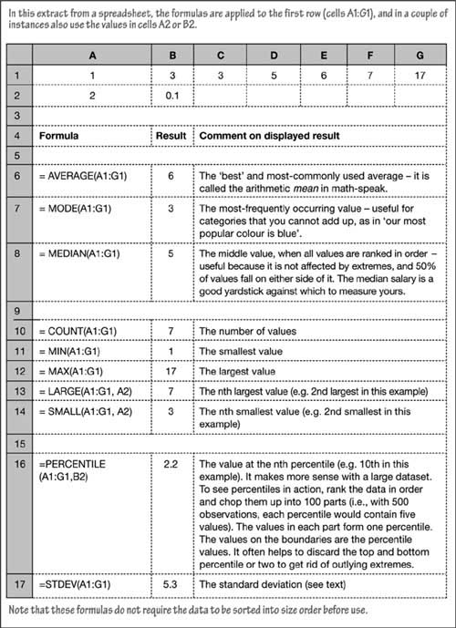
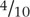
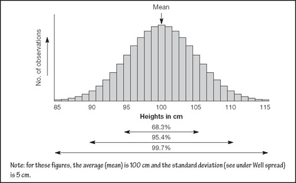
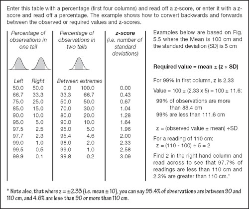

When numbers talk
The problem with numbers is that there are too many of them. If you were to list the salaries paid to each person in a large company, or the price of each item in its catalogue, we would probably be here until long after dark. However, if you identify the highest, lowest and average amount (perhaps by department or category of product) this creates an instant picture of the situation:
the average identifies the mid-point, and
the highest and lowest values reveal the range or spread.
For example, you have a good idea of my price list if I say that the average price of one of our widgets is $100; the cheapest is $85 and the most-expensive is $250.
Such descriptive summaries are very important. By the time we reach the end of this book, you will be using them to manage risk – so bear with me for a moment. You might find the next couple of pages a little heavy going – but only because of the silly jargon. If you get lost, well, you could just trust me and use the calculator on this book’s website.
To see quick summaries in your spreadsheet, select a range of cells, right-click on the status bar along the bottom of the window, and choose an option. For example, if you choose Sum, the total of the selected values will be displayed in the status bar.
Order from chaos
Summary measures such as totals and averages are good ways to bring order out of chaos. As you might expect, spreadsheets have useful functions built-in (see Fig. 5.4).
Fig 5.4. Descriptive functions
Let me give you a real-world example. A manufacturer of school equipment measured the heights of a large number of kiddies. Jordan, who did the survey, wrote down the observations, sorted them into order, grouped them into bands of 1 cm (about  of an inch), and used a spreadsheet to draw the chart in Fig. 5.5. The average height, as you can see, was 100 cm, and the range of observations was between 85 and 115 cm. Maybe you have guessed that Jordan fixed the results to make it easy for us to interpret. The distribution of the measurements is shown in the chart.
Fig 5.5. It’s normally like this
It happens that Fig. 5.5 illustrates a pattern that you will come across time after time – or you would if you went around appraising things and drawing graphs. Whenever you have a large number of items that are subjected to many independent influences, you tend to find this bell shape. It is so common, that it is known as the normal distribution. Most values are clustered around the midpoint, and there are fewer observations as you move away from the middle. When you have a chunk of data that you want to analyse, ask yourself if it might be normally distributed. If it is, you can apply the tricks I am about to describe.
What is not normal?
Well spread
The range (85 to 105 in this example) is a useful measure of spread, but it can be influenced by an extreme outlying value. For example, the range of values 1, 3, 3, 5, 6, 7, 17 is distorted by one extreme (17). One solution is to line up all the figures in numerical order, and chop off, say, the top and bottom few percent of readings (see Percentiles in Fig. 5.4).
A better solution is to use a handy measure with an appalling name – the standard deviation. This is nothing more than a simple indication of how closely some values are bunched around their average. It is little known, because it is horrible to calculate by hand. With a spreadsheet, it is as simple as any sum could be (as shown in Fig. 5.4).
For a normal distribution, the following rules of thumb always hold true:
About two-thirds (68%) of the values are within one standard deviation of the average (i.e. one-third immediately below and one-third immediately above the mean).
95% of the observations are within two standard deviations of the mean.
Almost all (99.7%) of the values are within three standard deviations of the mean.
You can see this very clearly if you inspect Fig. 5.5.
Now you know everything
You can probably see that if there are precise percentages associated with 1, 2 and 3 standard deviations, there must also be exact proportions directly related to any other number, such as 1.64 standard deviations. There are just two more bits of gobbledygook to dispose of and then I can let you in on the big secret:
To avoid the cumbersome expression number of standard deviations, statisticians call this a z-score (i.e. the 1.64 mentioned above).
To make it clear which part of the range of values is under consideration, the extremes are known as tails (see under Scary words, simple logic).
Normal use
At last we have reached the important part: If you know the mean and standard deviation of a normal distribution, you know everything that there is to know about it. How do you find out these things? I am about to explain three ways.
Use the calculator on this book’s website. You input the mean and standard deviation of your figures and pose a question (such as what percentage of these children are taller than 110 cm?, or how many widgets are underweight?) and the calculator will tell you the answer.
Look it up. There is a handy lookup table in Fig. 5.6. You can enter the table from a percentage or a value (via a z-score). For example, if you want to know the maximum height of 99% of the children, find 99% in the first column, read across to see that the associated z-score is 2.33, and convert this to a height of 111.6 cm as shown in the table. In other words, 99% of children measured were 111.6 cm or less in height. A more detailed look-up table can be downloaded from this book’s website.
Fig 5.6. Normal percentages and scores
Work it out. You can use the spreadsheet formulas starting with the letters NORM to find z-scores, percentages and so on. The sample spreadsheet will show you how the formulas work, if you really want to know.
|